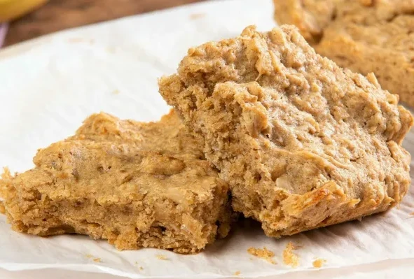

Almond Butter Cookies
Ingredients
- 1 large egg
- 1 cup (250g) almond butter, at room temperature or cold (not warm)*
- ½ cup (90g) light or dark brown sugar, lightly packed*
- 1 teaspoon (5g) baking soda
- Optional and tasty: ½ teaspoon (2.5 ml) pure vanilla extract
- 1 cup (190g) semi-sweet or dark chocolate chips
Instructions
- Preheat oven to 350°F (177°C) and line two large baking sheets with parchment paper or silicone baking mats.
- In a medium bowl, whisk the egg until beaten. Mix in the almond butter, then the brown sugar, baking soda, and vanilla (if using). Mix everything together very well. Depending how thick and/or cold your almond butter is, you'll have to use some arm muscles. Fold in the chocolate chips until combined.
- Scoop the dough, about 1.5 Tablespoons each, onto prepared baking sheet. Gently press down on the dough mounds with the back of a spoon. If you find the cookie dough balls are a little oily from your almond butter—mine usually are—blot each with a paper towel. If desired, press a couple chocolate chips onto the tops of each cookie dough mound.
- Bake for 10 minutes. The cookies will look very soft—that's ok! For crispier cookies, bake for up to 12 minutes. Sometimes I press a couple more chocolate chips into the tops of each cookie immediately after coming out of the oven. This is optional and only for looks.
- Allow the cookies to cool for 10 minutes on the baking sheet before transferring to a wire rack to cool completely. Cover leftover cookies tightly and store at room temperature for up to 7 days.
Peanut Free Tahini Noodles
Ingredients
- 3 tablespoons tahini
- 3 tablespoons soy sauce
- 1 tablespoon minced or grated ginger
- 1 clove garlic (minced or grated)
- 1 tablespoon maple syrup or brown sugar
- 1 tablespoon sriracha or chili paste (optional)
- 1 teaspoon toasted sesame oil (optional but recommended)
- 3 scallions (thinly sliced)
- 8 oz noodles of choice
- toasted sesame seeds
- fresh lime wedges
Instructions
- Prepare noodles according to package directions. Before draining, reserve a few tablespoons of the starchy cooking liquid.
- While the noodles are boiling, whisk together all ingredients for the sauce in a large, heat-safe bowl.
- When the noodles are cooked, strain them and add them into the bowl with the sauce. Use tongs or chopsticks to thoroughly coat. If the noodles are looking a little dry, add an extra splash of the cooking liquid to thin out the sauce and coat everything nicely.
- Taste and adjust sauce to preference. You may wish to add an extra dash of soy sauce for more umami/salt, an extra teaspoon of maple syrup for sweetness, or chili paste for extra spice.
- Garnish with additional scallions if desired, along with any optional garnishes you may like, such as toasted sesame seeds, fresh cilantro or mint, or a squeeze of fresh lime.

Banana Wake-up Bars
Ingredients
- ⅓ cup almond butter
- ⅓ cup brown sugar
- 2.5 tablespoons butter
- 1 egg
- 0.5 teaspoon vanilla extract
- 1 ripe banana, mashed
- ⅔ cup rolled oats
- ⅓ cup all-purpose flour
- 2 tablespoons wheat germ
- 0.25 teaspoon baking soda
Instructions
- Preheat the oven to 350 degrees F (175 degrees C). Grease a 9x9-inch baking pan.
- Beat together almond butter, brown sugar, and butter in a large bowl with an electric mixer until smooth and fluffy. Beat in egg and vanilla until incorporated. Mix in mashed banana. Stir in oats, flour, wheat germ, and baking soda until batter is well combined. Spread batter in the prepared baking pan.
- Bake in the preheated oven until set and lightly browned, 20 to 25 minutes. Remove from the oven and cool completely in the pan on a wire rack before cutting into bars.
